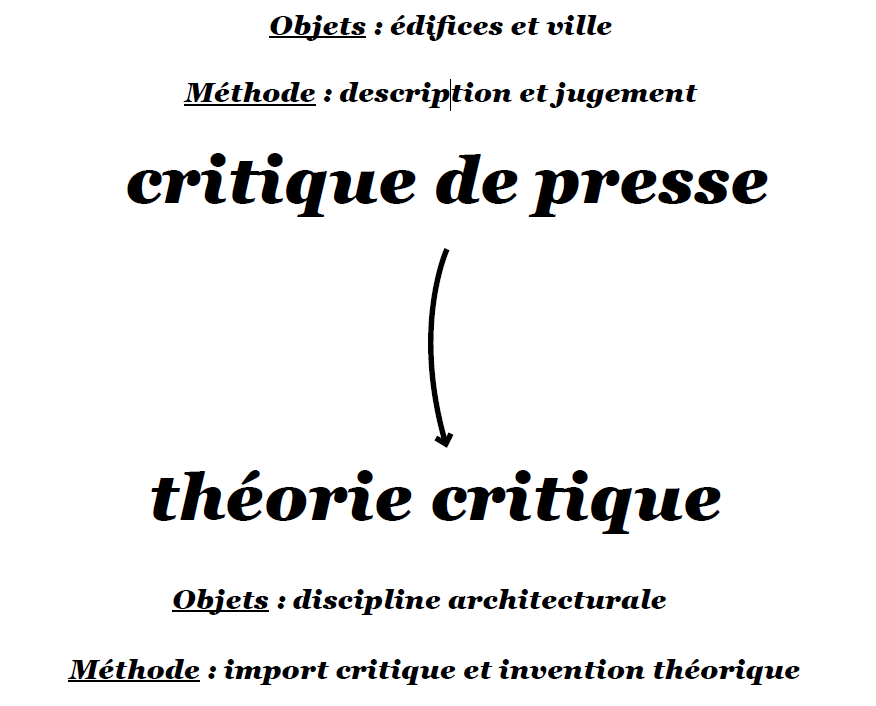
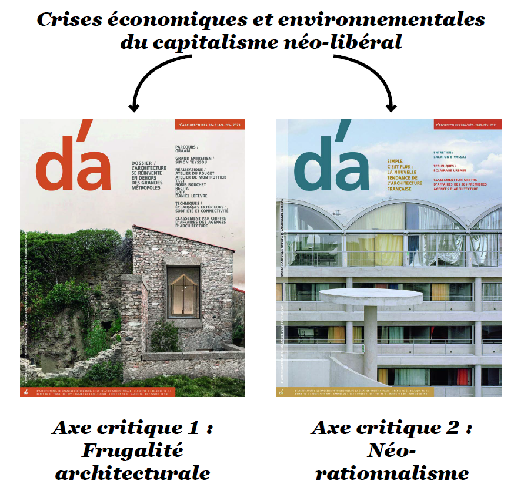
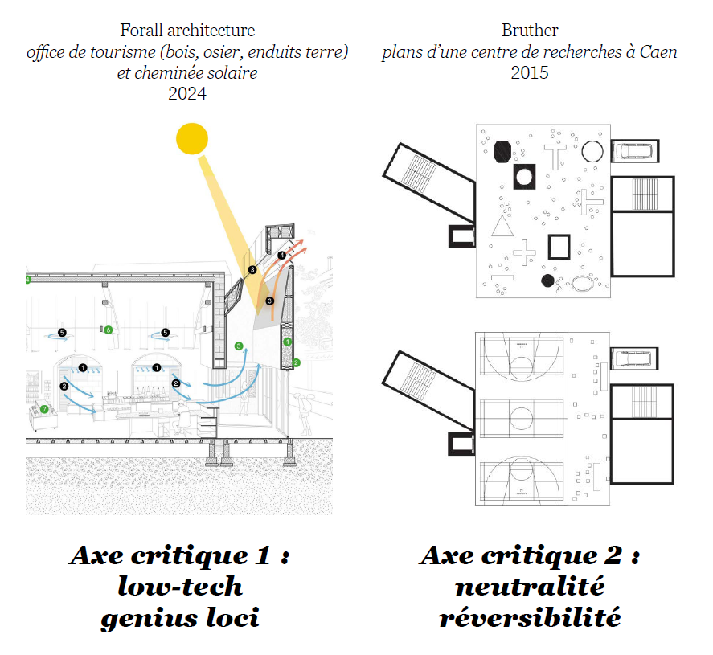

Démanteler le spectre post-critique
Louis Fiolleau
Club ASAP 10
avril 2026
Temps de lecture : 20 min
Crise de la critique, inefficacité à agir sur le réel, journalisme promotionnel : les slogans diagnostiquant la mort de la critique ont été nombreux au cours des quarante dernières d’années. Déjà en 1997, dans une interview au critique d’architecture Jeffrey Kipnis, Jacques Herzog affirmait que : « les mots n’offrent, d’aucune manière que ce soit, la moindre aide. Nous ne nous rappelons aucun texte qui ait signifié quelque chose dans notre architecture. Il n’y a aucune exception à cela ».
Et d’ailleurs, on pourrait même affirmer sans passer par quatre chemins que c’est bien sans les mots de la critique et plus largement sans la théorie sur la profession construit le plus : l’architecte pourrait en effet tout trouver dans sa situation de projet, une situation où seule l’approche pragmatique vaudrait alors quelque chose.
Sans la critique, on peut faire de l’architecture et en nombre : ok mais bon on le sait quelque chose cloche. Les formes architecturales de la métropole si elles se parent de leur plus beau bardage bois avec épines en relief, se conforment inlassablement aux logiques de la ville néolibérale. Face au mal-logement, à la spéculation immobilière, à la division de classe et racial du territoire urbain ou l’aseptisation de l’espace public, il est alors légitime de se questionner sur la capacité intrinsèque du pragmatisme seul à créer une rupture.
Un coup de pouce externe ne semble donc pas de trop. La critique et son autonomie présupposée avec l’acte de construire, semble d’un coup plutôt intéressant si notre objectif est en réalité de démanteler les formes hégémoniques de production de la ville. Mais alors que fait la critique ?
1. Inflation de la critique
Et bien, tout d’abord, pour comprendre pourquoi tant d’observateurs ont dès les années 80 criés à la fin de la critique, c’est parce qu’avant la récession, il y a eu l’inflation. Si l’on revient au début du XXème siècle, la critique de la période moderniste s’était d’abord imposée via un registre ‘’opératoire’’ à en croire les mots du théoricien marxiste Manfredo Tafuri – c’est-à-dire, pour résumer à gros traits, une critique axée sur la description de ce que devait être la bonne architecture de l’époque. Cette forme critique a été une norme acceptée car il fallait engager toutes les forces économiques et culturelles dans les belles valeurs du projet rationaliste.
Plus tard, en réponse notamment à l’échec de la reconstruction post WWII, la critique du tournant post-moderne s’est alors logiquement affairée à dénoncer les grands-récits qui recouvraient ce projet idéologique déchu. Influencée par l’école Francfort et sa méthode de déconstruction des idéologies via l’apport des sciences humaines – la philosophie, la sociologie, la sémiologie… - le champ de la critique architecturale s’est alors étendue au-delà d’une presse d’articles traitant des édifices ou de la ville vers la sphère plus englobante de la théorie critique.

On ne traite plus des objets d’architecture isolés mais des idées de l’architecture dans son ensemble. Pour l’historienne Hélène Jannière, la pratique critique a été progressivement reléguée à l’arrière-plan au profit d’une critique théorique autonome sans compromission avec le marché de la construction et les idéologies dominantes. La méthode majoritaire n’est plus celle de la description réflexive mais celle de l’import critique de pensées extra-architecturales dans la discipline. Le langage et l’ornement sont repensés à l’orée des media studies, la typologie est requestionnée à travers une lecture marxiste de la ville, la french theory infuse maintenant les bases philosophiques d’un nouveau formalisme.
On remarque à ce moment-là que la production critique a aussi atteint un stade de développement et de prolifération tel que des véritables écoles de pensée ont émergé. Ces écoles tentaient alors de jouer au jeu de l’influence en déterminant déterminent les nouveaux courants et les nouvelles idées faisant rupture avec l’histoire. Dans un sens, on pourrait supposer que c’est quand la critique fait école et qu’un collectif choisit de viser avec la même mire, qu’elle peut avoir une force de frappe plus importante et devenir un véritable groupe d’influence, pour ne pas dire lobby, y compris sur la pratique. Mais paradoxalement c’est là que la théorie critique a finalement échoué notamment dans les années 80.
Sa consécration marquée par les mots des célèbres revues américaines - oppositions de Eisenmann ou assemblage de Mickael Hays - a en effet été concomitante avec un fort désintérêt des praticiens. Confrontés aux reconfigurations du marché néolibéral et aux sirènes de la concurrence de l’accès à la commande, ces derniers ne reconnaissaient plus de doctrines dans ce qu’ils considéraient comme un véritable fouillis intellectuel. Les années 90 n’ont donc pas célébrés les thèses de la théorie critique mais plutôt les objets iconiques issus des stratégies de distinction de la profession.
2. Abandon d'une critique trop critique
La crise de la critique du nouveau millénaire s’inscrit donc dans ce moment de réactance fondamentalement anti-théorie. L’affrontement le plus lisible a lieu aux Etats-Unis avec la controverse dite de la Post-critique. Pour Maxime Geny, architecte-chercheur travailleur sur le sujet, ce moment marque « l’annonce officiel de la constitution d’une conspiration » visant à couper le lien de la pratique avec la théorie critique. Une série d’intellectuels suivront et inviteront alors par une série de publications et de colloques à embrasser le consensus néolibéral et ses nouvelles opportunités.
La responsabilité des professionnels du nouveau millénaire doit se recentrer sur l’agencement les demandes complexes du néolibéralisme tout en n’oubliant pas de célébrer l’innovation culturelle et technologique à bras ouverts. Il s’agit en somme d’embrasser le projet d’un nouveau pragmatisme sans faille. A noter que certains architectes, parmi ceux qui avaient d’ailleurs œuvrés dans les revues de théorie critique nommées plus haut, ont accepté - sans se cacher d’un certain cynisme- de développer les nouveaux outils du pragmatisme architectural. L’une des figures les plus célèbres de cette transition post-critique étant celle de Rem Koolhaas. Le développement de la métropole néolibérale demande, par exemple, à ce que la tradition du type soit remplacé par l’usage du diagramme, performant notamment dans sa capacité à s’adapter à toutes futures configurations programmatiques.
Tout ceci n’empêche cependant pas les annonciateurs de la nouvelle architecture a-critique de tenter de créer leur propre groupe d’influences. Pour le critique néerlandais Bart Lootsma, l’avant-garde du pragmatisme des années 2000 s’incarne dans le réalisme économique de le Superdutch, un mouvement qui englobant la génération des agences héritières de Rem Koolhaas.
3. Conjurer le spectre post-critique
Bon, on pourrait alors se dire que cet optimiste n’était qu’une conséquence passagère liée avec l’euphorie du passage à l’an 2000. L’accélération des crises structurelles du capitalisme dont celle des subprimes de 2008 allaient marquer un coup d’arrêt et le retour d’une véritable critique de rupture. Et il est vrai, que des nouvelles tendances critiques sont apparues tournant notamment la page avec la période de l’architecture iconique.
On en identifiera deux qui pour nous, et on en a déjà parlé des clubs précédents (voir intro club 8) sont constituantes de deux écoles critiques aujourd’hui influentes chez les praticiens comme dans les écoles d’Architecture européennes. Le néo-rationnalisme d’un côté et la frugalité architecturale de l’autre. Les deux constituent en soit une critique de l’excès des architectes ‘’cools’’ des années 2000, excès en matière, en gadgets et en effets.

Mais là où les néo-rationnalistes traduisent l’économie des moyens par un travail sur la neutralité et les structures réversibles, les décroissants, eux, repensent l’usage de la matière via des systèmes constructifs bas carbone en circuit cour en réinvestissant dans le même temps les territoires ruraux. Ces nouvelles doctrines pour la pratique sont logiquement relayées via les articles de presse spécialisés, quelques textes de critiques de métier mais aussi par l’appareil institutionnel des biennales et autres expositions rétrospectives.
Cependant, comme on l’a dit la critique gagne en influence lorsque qu’elle constitue un collectif qui l’auto-alimente de ressources critiques. En l’occurrence, on remarquera que ces collectifs sont aujourd’hui moins constitués par des professionnels de la critique que par les praticiens eux-mêmes – souvent enseignants en parallèle – qui produisent (ou font produire d’ailleurs) des textes, des analyses, des contre-projets à l’occasion de toutes sortes de workshops estivaux, enseignements de projets ou d’associations professionnelles : la frugalité heureuse et créatrice de Madec et cie, Workshop de Pesmes de Bernard Quirot, le Superstudio à l’EPFL de Gargiani, etc.

4. Conjurer le spectre post-critique du pragmatisme
Mais est-ce dans le fond la critique par la frugalité comme par l’autonomie disciplinaire marquent-elles véritablement une rupture avec le moment post-critique ? Autrement dit ont-t-elles ouvert l’horizon sur un dépassement des modes de conception de la ville néo-libérale ? On défendra que s’il est vrai que formellement la pensée critique se reconfigure pour compenser les manques de la critique architecturale de presse et pour tenter de prescrire de nouvelles conceptions de l’architecture, dans le fond, je dirais que le spectre du pragmatisme a continué à persévérer ces 30 dernières années. Et plus que cela, je pense que ces tentatives critiques ont plutôt eu tendance à donner des balles pour préserver le statu quo de la production néo-libérale de l’espace. Pour arriver à ce constat, il faut bien comprendre que le pragmatisme comme science du réel est un leurre puisqu’il est avant tout un outil idéologique qui ne dit pas son nom. Face au mauvais pragmatisme décomplexé des années 2000, on oppose finalement un bon pragmatisme sérieux car s’adaptant aux crises économiques et écologiques.
Pourtant produire des espaces neutres sans programmes et un langage épuré en façade ne tient pas seulement du bon sens pratique. Il permet aussi et surtout au fond de poursuivre le projet d’expansion de la métropole en s’adaptant au climat d’austérité et en disposant d’une réserve spatiale ouverte à toutes formes d’investissement financier. De même, les principes bioclimatiques ou le tout-bois aussi vertueux soient-ils peuvent tout à fait coexister avec un projet de campus étudiant pour l’école 42 de Xavier Niel. Ces pensées critiques bien que produisant des architectures relativement intéressantes risquent in fine au mieux d’être réformistes ou au pire de devenir conservatrices.
Pour conjurer le spectre post-critique, il s’agit donc de changer les paramètres de jugement du projet d’architecture et de sortir de l’hégémonie du critère pragmatique. Les projets d’architecture contemporains doivent devenir autant d’indices pour décortiquer les logiques de fond que camoufle justement la conception pragmatique. On reprend alors en quelque sorte le vieux mantra de Walter Benjamin dans l’auteur comme producteur : « Donc, avant de demander : comment une œuvre littéraire se pose-t-elle face aux rapports de production de l’époque, je voudrais demander : comment se pose-t-elle en eux ? » Les projets de la frugalité et du néo-rationalisme doivent alors être appréhendé non pas comme des tendances ou styles critiques de rupture mais au contraire comme des appareils productifs permettant un renouvellement de la ville néo-libérale.
Mais comment construire une nouvelle pratique opérante, c’est-à-dire qui construit, si la critique se limite à identifier ce que l’architecture fait de mal et ce qu’elle ne doit donc plus faire. Autrement dit si elle n’est que destituante. Même si on pourrait développer indirectement des outils pour démanteler voire détourner les formes construites du pragmatisme, on se heurtera inévitablement aux limites de la capacité transformatrice de l’acte de bâtir seul : si les commanditaires et ceux qui détiennent le capital imposent des programmes architecturaux qui reproduisent sans cesse les logiques néolibérales, que peut faire la pratique pour s’y opposer ?
Mais après tout ce qu’on vient de dire, on pourrait affirmer que l’enjeu se situe davantage en amont. On l’a dit, la critique si elle réussit à faire école en englobant un collectif, peut aussi prendre les contours d’un groupe d’influence capable de former intellectuellement ses consommateurs. La revue décoloniale The funambulist est un bon exemple de la constitution d’une école critique qui précède l’enjeu de la pratique. La somme des productions écrites alimente plus largement une base de données pour décortiquer les dispositifs spatiaux violents qui structurent l’impérialisme. 0 Plus que des praticiens, prêt à construire, son but est finalement de former un corps social plus large à l’anti-impérialisme. Symptomatiquement, cette forme de critique destituante touchent des architectes de formation comme des militants politiques cherchant à s’étendre leur critique aux questions d’espaces.
Revenons alors finalement sur l’exemple du workshop de Pesmes organisé par Bernard Quirot. Si le fond de la proposition critique ne porte pas d’opposition conséquente aux logiques de la métropole, la forme pourrait nous donner des idées vis-à-vis de la finalité de la formation d’une école critique. L’introduction du livre du workshop 2025 démarre en énonçant le but qui sous-tend cette réunion annuelle de jeunes praticiens au cœur de la Haute-Saône : « Un médicis à Pesmes ? L’année 2026 sera celles des élections municipales et notre association fonde évidemment des espoirs dans les résultats de cette élection ». Alors que peut réellement viser une critique de rupture avec le moment post-critique ? Former intellectuellement un corps social de praticiens au démantèlement des formes de la ville néo-libérale dans l’attente de l’aboutissement d’un travail militant conjoint.

L'ensemble des articles issus du club asap 10 sont disponibles ci-dessous:
| # | Titre | Auteur | |
|---|---|---|---|
| 100 | Les styles de la critique | Hugo Forté | Club #10 |
| 101 | L'oeuvre critique | Maxime La Goutte | Club #10 |
| 102 | Démanteler le spectre post-critique | Louis Fiolleau | Club #10 |
| 103 | The backrooms, une fiction critique populaire | Titouan Gracia | Club #10 |
| 104 | What you read is what you get | Hugo Forté | Club #10 |
| 105 | Un problème chez ASAP | Herzgeg & Deux Neurones | Club #10 |
| 106 | Tableau nantais d'une critique | Un gars laxique | Club #10 |